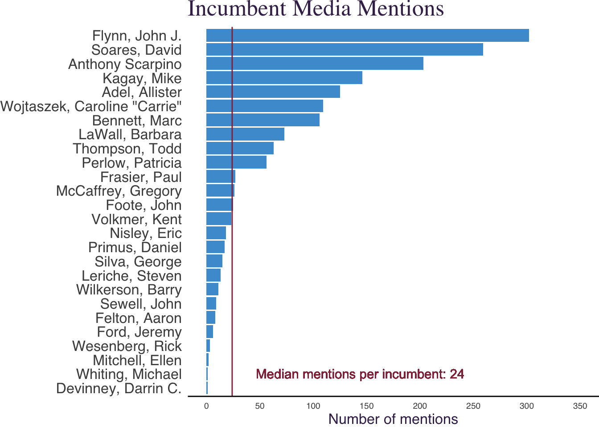

Code
articles_per_prosecutor<- incumbents %>%
filter(duplicative_publication_of_previous_article == "0" |
#Next line because of Devinney had no articles
is.na(duplicative_publication_of_previous_article)) %>%
mutate(prosecutor_name = case_when(
prosecutor_name == "John J. Flynn" ~ "Flynn, John J.",
prosecutor_name == "Devinney" ~ "Devinney, Darrin C.",
TRUE ~ prosecutor_name)
) %>%
group_by(state, contest, prosecutor_name) %>%
summarize(articles = n()) %>%
mutate(articles = case_when(
prosecutor_name == "Devinney" ~ 0,
prosecutor_name != "Devinney" ~ as.numeric(articles)
)
) %>%
arrange(desc(articles))
g1 <- articles_per_prosecutor %>%
ggplot(aes(x = articles,
y=reorder(prosecutor_name, articles),
text = paste("articles: ",articles)
)
) +
geom_col(fill="#4B9CD3") +
scale_x_continuous(breaks=seq(0,350,50), limits=c(0,350)) +
geom_vline(aes(xintercept = median(articles)), color="#952e46") +
geom_text(aes(x=median(articles),
y=2,
label= paste0("Median mentions per incumbent: ", median(articles))
),
color="#952e46",
nudge_x = 120,
show.legend = FALSE
) +
labs(title = "Incumbent Media Mentions") +
xlab("Number of mentions") +
ylab(NULL) +
theme_classic() +
theme(plot.margin = unit(c(0,0,0,0), "cm")) +
theme(axis.ticks = element_blank() ) +
theme(axis.line.y = element_blank()) +
theme(text = element_text(family="sans",
size = 9,
color = "#3f2b56")) +
theme(title = element_text(family = "serif", size = 16.2))+
theme(axis.title.x = element_text(family = "sans", size = 12.15)) +
theme(axis.text.y = element_text(family = "sans", size = 12.15))
g1